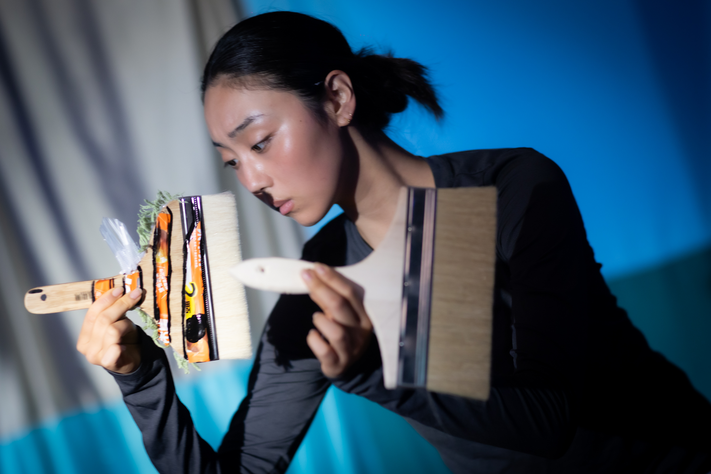

01 / WORK
《兄弟漂流記》


《兄弟漂流记》— a collectively devised environmental theatre piece. Produced by Hu Ge, written and directed by He Ying, adapted from Han Lili's picture book Guess Who I Am. Inspired by the true story of a pregnant sperm whale that died after ingesting plastic waste. The creative team wove the reality of ocean plastic pollution into a tender undersea story told through the theatrical imagination.
Back to Work ↘